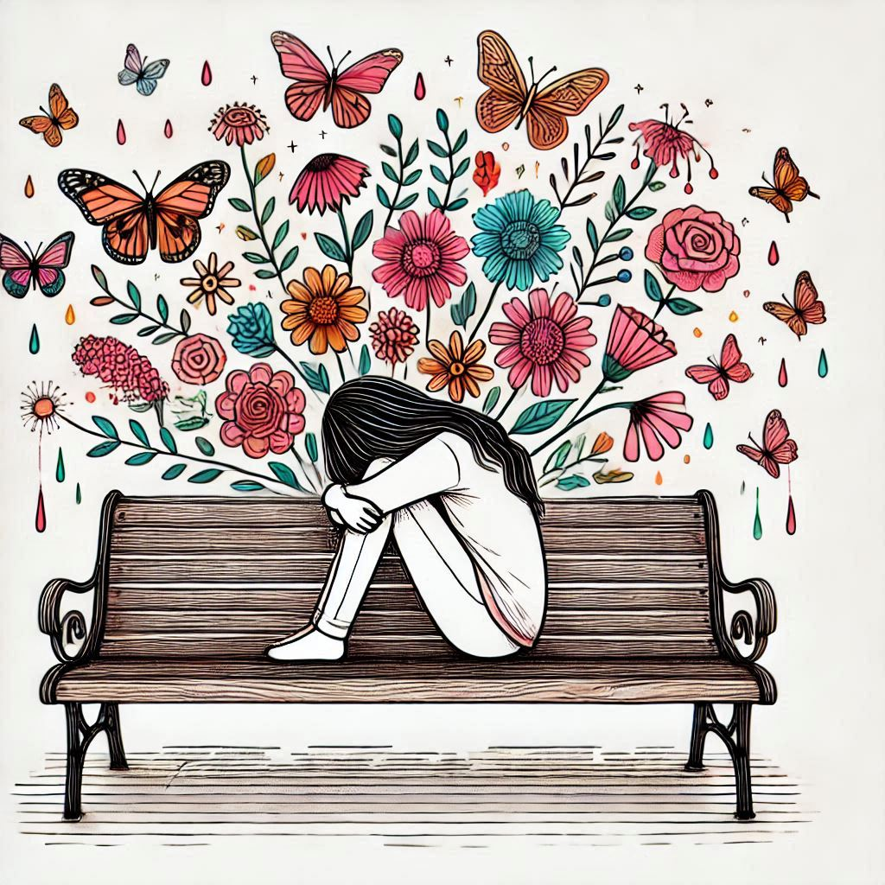

This is it, this is me.
Any day I get to say those words is one for the books, I wouldn’t call it a good day, maybe in hindsight I’ll see the merit in it but in the moment it feels nowhere near good. You probably have an idea of the kind of days I’m talking about: the ones where you have a tough, but much needed conversation, when you reveal a less than ideal version of yourself, when you get through a HIIT workout. You don’t have good memories of these days but you definitely remember them. There is a term that perfectly what you’re going through: Naked, you are (emotionally) bare.
Photo by Rebecca Prest on Unsplash
What exactly does it mean to be naked? Emotional nakedness is a state of vulnerability, devoid of control in which you are exposed to the possibility of harm and suffering. It feels very similar to being physically naked. You are on high alert, feeling exposed and defenseless. In the moment, you are lost for words, depleted, whatever else is required is out of your control. In other words, it sucks. Irrespective of the context, two themes emerge out of these moments.
-
First there is despair; at this point you’ve done the best you can to nudge the universe to your desired outcome. You’ve exhausted all your options and lowered expectations. Your status might as well be “waiting for a miracle”.
-
Then there is what’s comes next, or rather the fear of what might follow. What follows despair is the risk of loosing something you care about. It could be your reputation, companionship, your livelihood and sometimes even your life. You care about it about enough that the thought of loosing it feels fatal. There is a good chance your fears won’t actualize but its hard to imagine that future. Instead what you see is loss, failure and rejection.

Put these two together and the ground might feel like a much safer place to be. Its understandable why no-one wants to be so defenseless. It is neither fun nor encouraged in society. We are wired to minimize suffering and consiously or not we do so every chance we get. One might argue that all our motivations are rooted in avoiding vulnerability. We strive to get richer so we don’t have to ask for things. We seek more powerful positions to have more control over fates. We go on self-improvement journeys to be less flawed and therefore less likely to be rejected; the list goes on. There is always more armor to acquire: more wins, more titles, more possessions. The bigger the armor, the louder the cheer.
Despite our never-ending attempts to hide, life finds a way of stripping us bare. It doesn’t take much to smash the facade, an innocent comment from the wrong combination of person, time or place will do. Its a bit of an extreme sport to avoid it over the holidays. Yes, we are doomed and hopeless but the goodnews is there is light at the end of tunnel. On the other side of the discomfort are the words:
This is it, this is me.
That is the sound this beautiful thing called acceptance that often comes with a side of humility and connection. When it comes to it, you have no other option but to accept your own fragility and imperfection. Maybe you’ll learn with your imperfections, or finally ask for help, or comes to terms with the fact that in the end, nothing matters. Either way, you will grow.
I wouldn’t wish for vulnerability on anyone, but it is a necessary evil and it helps to be prepared. I like to simulate the experience through hard workouts. Pushing yourself to failure is an effective way to summon despair and arrive at acceptance within an hour (talk about efficiency). The aame can be said of any other pursuit that pushes you outside your comfort zone. That said, as uncomfortable as it feels to be naked, there is value in it; don’t run, lean in, occasionally even pursue it. I’m rooting for you.